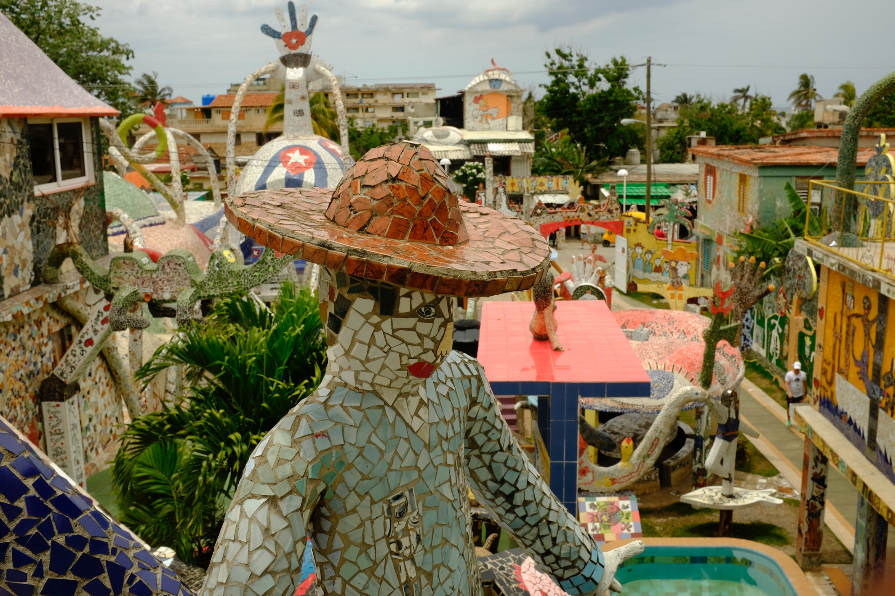

One reason I like to travel is to regain perspective on what matters back home. Our visit to Cuba in May did just that and reminded me that traveling to countries that are culturally, economically and socially, different than America is good for the soul.
I recommend you visit Cuba. If not to refresh your perspective, go to support the Cuban people. When we arrived we took a local taxi to our AirBnB in Havana, ate at private Cuban-owned (not the Government) restaurants, and experienced Cuba through the lens of everyday people.
During our visit, we compiled a list of advice we’d come back with to make the trip a tad more relaxing. After visiting four different cities with no internet and a fixed amount of cash, we learned that the embargo makes visiting Cuba difficult. For example, you can’t withdraw money from an ATM or get money from a bank without having cash on hand before arriving. However, less so after Obama administration relaxed restrictions to visit Cuba. So, I thought I’d share advice you can take before going to Cuba. If you want to get details on our itinerary throughout the trip, feel free to DM me on Twitter or comment below and I’ll tell you all about it.
Here’s my advice in summary:
- Learn Spanish
- Bring 100 euros per day per person
- Lodge at AirBnB spots
- Download Google Trips
- Bring snacks
Learn Spanish
Spanish is the primary language and you’d do yourself a favor by speaking the native language. Tamara and I were fortunate to have a friend (Lindsey) who spoke fluent Spanish, but we were hugely handicapped by not spending more time beefing up our Spanish.
Bring $100 euros per day per person
I read somewhere that $100 per day per person is a good amount if you do not plan to purchase a bunch of merchandise to bring back. After spending 12 days in Cuba, this number sounds about right. We brought $1,500 total for two people and barely got by. However, our trip included long tax commutes to other cities in Cuba. You may be asking how come we didn’t just stop by an ATM and get more money. Well, the embargo doesn’t allow us to do that simply. So, your stuck with the money you bring.
That said, you should bring Euros before you arrive in Cuba if your traveling from America. You get more CUC for your euro that way.
Lodge at AirBnB spots
AirBnB powered our Cuba trip. A big part of our trip was planned around the service we got from our hosts. For example, we booked taxis to other cities through our host, got directions when we weren’t close by public internet, and had breakfast and dinner prepared by our hosts. The advice here is to take advantage of the host’s hospitality and concierge service.
Download Google Trips
The internet is sparse in Cuba. However, we realized how true this was when we got there. Our first AirBnB had a router but the internet didn’t work and it wouldn’t have worked without an Internet card. You buy Internet cards from Etecsa and they have a time limit to how long you can be on the Internet. Your best bet is to pick up a 5-hour Internet Card. However, one problem we found is that your session doesn’t close when you disconnect from the internet, so you end up wasting time. It’s really sucky, so that is why you should download Google Trips.
Google Trips stores your itinerary on your phone so you can reference it offline. It also is able to triangulate your location without a network connection, suggest places to see and eat, and provide a map with info of places around you. We used this quite a bit to discover the city beyond the research we did before visiting.
So, download Google Trips and set it up before your trip.
Bring Snacks
Cuba food is great, but sometimes you want a snack. Snacks are a huge industry in America but its virtually non-existent in Cuba. So, my advice here is to pack snacks that you can have on foot or when your next meal is a few hours out.